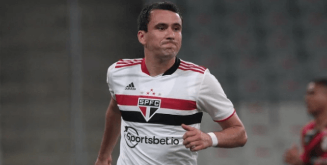
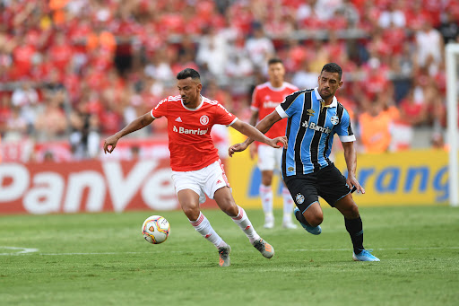
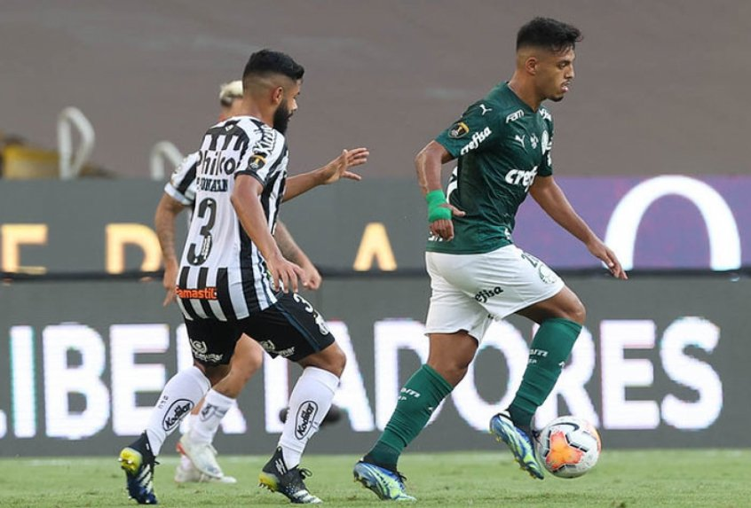
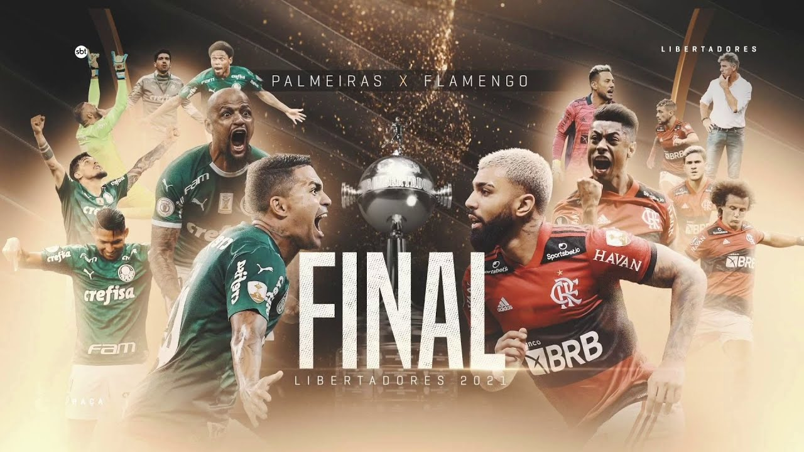
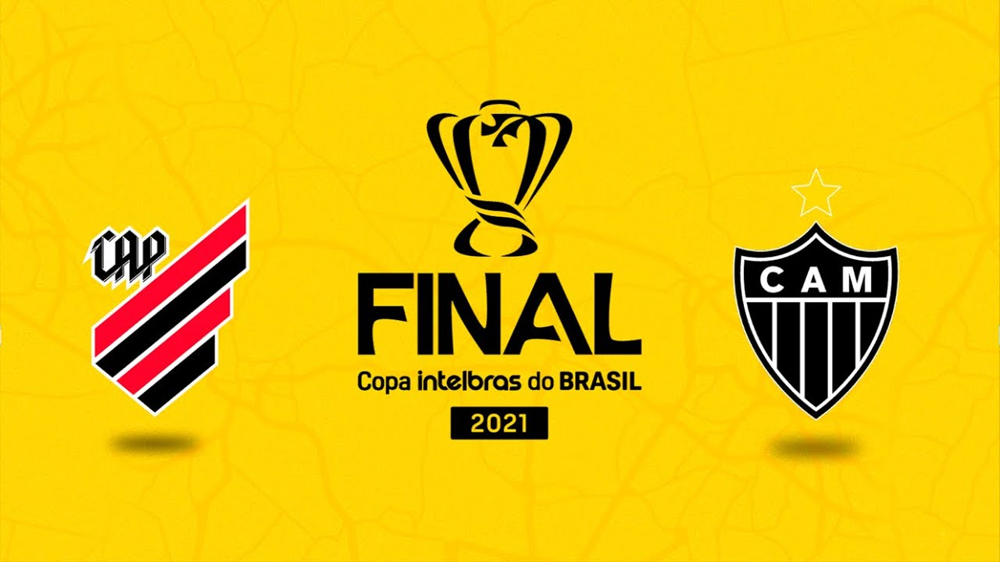
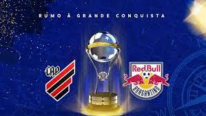

Futebol Nacional


São Paulo tenta voltar a vencer fora de casa após mais de dois meses; veja os números
Último triunfo fora de casa foi em agosto, sobre o Sport, com gol de Pablo
Grêmio encara pela frente o GreNal mais importantes da sua história recente. Veja odds
Tricolor está desesperando na luta contra o rebaixamento e encara seu maior rival fora de casa na reta final do Brasileirão
Palmeiras defende invencibilidade de dois anos contra o Santos; relembre os jogos
Verdão não perdeu os últimos seis encontros contra o rival deste domingo
Veja qual será a possível escalação para a final da libertadores
Especialistas e comentaristas discutem sobre qual será a possível escalação dos dois times
Copa do Brasil: CBF define os mandos de campo da grande final; veja quem decide em casa
Torneio em partidas programadas para o mês de dezembro, e pagará ao campeão mais de R$ 50 milhões